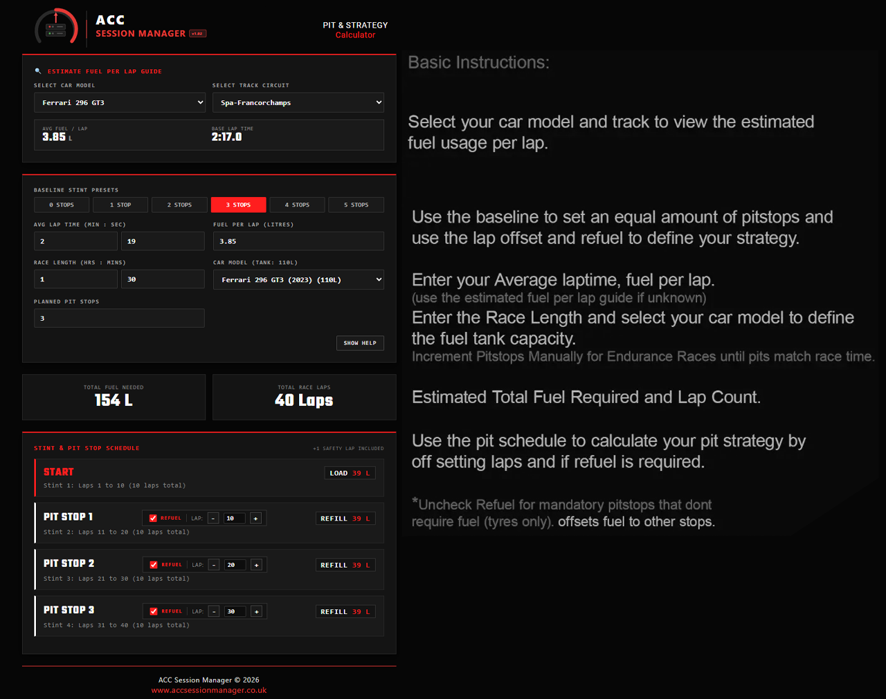

ACC
SESSION MANAGER
v1.02
PIT & STRATEGY
Calculator
🔍 ESTIMATE FUEL PER LAP GUIDE
SELECT CAR MODEL
SELECT TRACK CIRCUIT
AVG FUEL / LAP
0
L
BASE LAP TIME
0:00.0
NO TELEMETRY MATCH FOUND
BASELINE STINT PRESETS
AVG LAP TIME (MIN : SEC)
FUEL PER LAP (LITRES)
RACE LENGTH (HRS : MINS)
CAR MODEL (TANK: 114L)
PLANNED PIT STOPS
SHOW HELP
TOTAL FUEL NEEDED
0 L
TOTAL RACE LAPS
0 Laps
STINT & PIT STOP SCHEDULE
+1 SAFETY LAP INCLUDED
Enter valid lap time, fuel usage, and race duration to compute strategy...
✕ CLOSE
